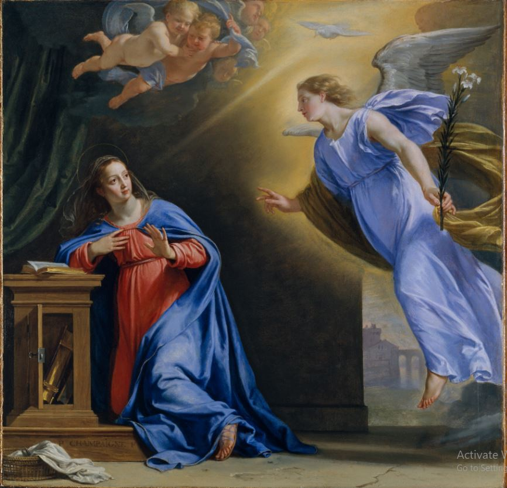

About the church
.
The chapel stands on a parcel of land, known in the late nineteenth century as No 3, Nandidurg Road and on which stood a house called “The Cottage” which belonged to Mrs. Lucy Lewis. She bequeathed it to her son Fredrick Ernest Lewis who sold it in 1912 to Mrs. Ethel Pocock. She passed away in 1945 and the house was left to Edith Mathew. In May 1949, the property was sold to Sr. Agnes Vera Kershaw and Sr. Marie Godelieve de Rynck. The two Belgian sisters had come to India in search of vocations and with the idea of training local girls to become nurses. They soon assed to the property by buying a part of No 2 Nandidurg Road and the new property at this time came to be renumbered and became no 11 Nandidurg road. In 1956 the foundation stone for the Chapel of Mary of Nazareth was blessed by His Grace the Most Reverend Dr. Thomas Pothacamury, Archbishop of Bangalore on the feast of the Annunciation. The architect was Mr. Arthur Ingle who had also designed St.Patricks Church. There were 30 main benefactors among which were the Sacred Congregation for the Propagation of faith, Reverend Dr. Thomas Pothacamury, Archbishop of Bangalore, Bishops of Liege and Bruges who most likely took collections in their local churches and other benefactors from England, Belgium, Florence, The Oostpriesthulp Tongerlo which when translated tells us that help came from the Eastern Priest Auxiliary founded by a Nobertine Abbot from the Tongerlo Abbey in Belgium, and “Demarche, Service d’entraide”. “Demarche” is a weekly newspaper distributed after Sunday Mass and Service d’Entraide Tiers Monde describes, to the attention of the Demarche-readers, various small projects that need to receive some financial aid. So we know that Catholics all over Europe contributed their mite. There were also some Indian contributors, Mr. and Mrs. George Thomas from Kottukaplliam, Mr. and Mrs. K George Joseph from Madras, Mr. Anthony Poobalarayer and Mr. S T Villavarayer both from Virapandianpattam and Mrs. Josephine Dharmavathy Raju. Collecting all of this money took time and the Chapel was only completed in 1965. It is built wholly of granite and its stark lines are beautiful.
In 1965 the property was acquired from the sisters by Most Rev.Dr. DS Lourdasamy and The Foreign Missionary sisters took over the convent. In 1972 the Franciscan Sisters of the Presentation of Mary were invited by the then Archbishop of Bangalore the Most Rev.Arockiaswamy to Bangalore to help educate the poor children in the areas of Mattadahalli and Chinappa Gardens. The order bought the property No11 Nandidurg Road from the Archdiocese. The sisters have since lived there serving the community faithfully and also running a much needed girl’s hostel. For many years, beside daily Mass, they also arranged for Mass, Sunday mornings and evenings to the great convenience of all the people who lived close by. Holy week services and Midnight Mass at Christmas saw us all at the chapel rather than anywhere else and they are all treasured memories.

The sisters opened the doors of the Chapel to people in the neighborhood whenever they were requested. The First mass was celebrated by Fr. Owen Dsouza here in 1970 and over the years a private First Communion, a Golden Jubilee celebration and two weddings! We are sure many others have availed of our generous hospitality as well. Nandidurg road has changed much over the years and from being a quiet road that seemed to lead only to the Muslim cemetery, it has become the main road to the new International Airport. Benson Town has grown with Apartment blocks mushrooming all over and the population has more than quadrupled. The Archdiocese felt that the people in Benson Town and Jaymahal would be better served if they had their own parish. And so by an Ecclesiastical Agreement between the Archdiocese of Bangalore represented by the Archbishop Most Rev. Bernard Moras and the Franciscan Sisters of the Presentation of the BVM on the 5th May 2020, part of the property No 11, Nandidurg Road was bought back and the Chapel opened to the public as a Parish Church. Even though our Chapel has been elevated to the status of a Church, we are very pleased to still have the familiar faces of the sisters around. Their care of the Chapel all these years has kept it in the pristine state it is and for that we are very grateful to them.